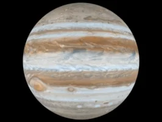

Jupiter

Jupiter is meer dan twee keer zo zo groot dan de andere planeten van ons zonnestelsel samen.
De Grote Rode Vlek van de reuzenplaneet is een eeuwenoude storm groter dan de aarde.
JUPITER VERKENNEN
Negen ruimtevaartuigen hebben Jupiter bezocht.
Zeven vlogen voorbij en twee zijn in een baan om de gasreus gevlogen.
Juno, de meest recente, arriveerde in 2016 bij Jupiter.
INGREDIËNTEN VOOR HET LEVEN?
Jupiter kan het leven zoals wij het kennen niet ondersteunen.
Maar sommige manen van Jupiter hebben oceanen onder hun korst die mogelijk leven ondersteunen